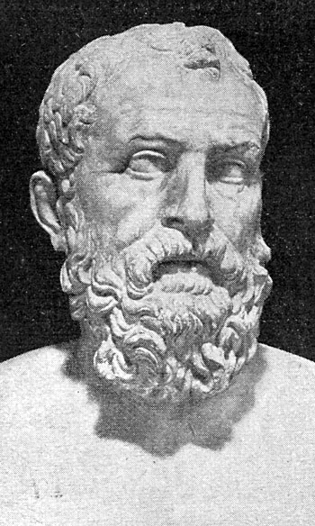

Solón
Fue un legislador clave que reformó la estructura política y social de Atenas en el siglo VI a.C. Su creación de un sistema legal más justo y la abolición de la esclavitud por deudas marcaron el comienzo de las reformas democráticas. Estas reformas sentaron las bases para el futuro desarrollo democrático de Atenas.